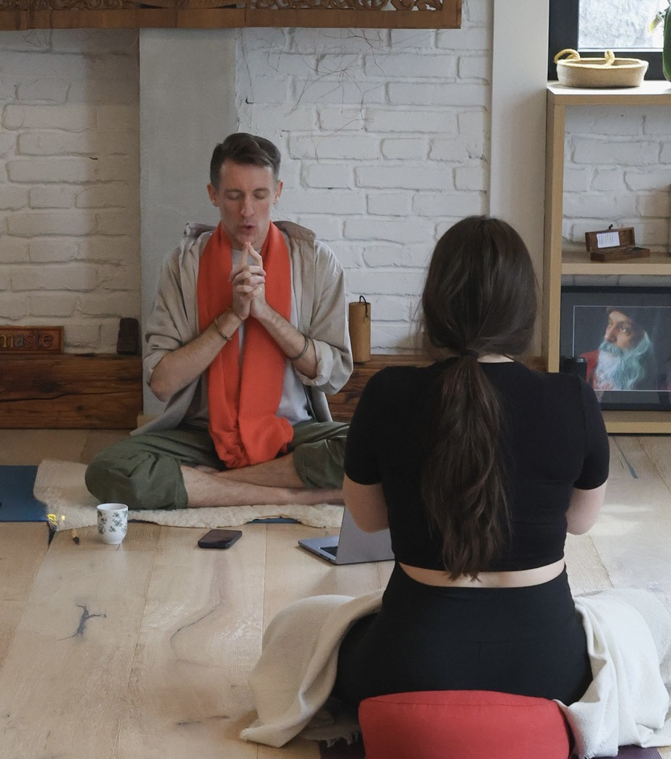

Kundalini Master Class
Dva sata prakse. Kundalini joga vežbe, tehnike disanja i meditacije usmerene na razvijanje intuicije i bolji kontakt sa sopstvenim unutrašnjim osećajem.
Prijavi sePrepoznaješ li se
Možda ti je ovo poznato. Osetiš nešto, a onda počneš da preispituješ sebe. Tražiš racionalno objašnjenje, razmišljaš šta će drugi reći ili pokušavaš da budeš potpuno siguran/na da nećeš pogrešiti.
A ponekad se dešava i suprotno - snažan osećaj odmah protumačimo kao znak da treba nešto da uradimo, bez zastajanja i razumevanja onoga što se u nama dešava.
Ali tu se često pojavi jedno važno pitanje
O master classu
To su dva sata prakse. Radićemo Kundalini joga vežbe, tehnike disanja i meditacije usmerene na razvijanje intuicije i bolji kontakt sa sopstvenim unutrašnjim osećajem.
Sve se održava online, tako da možeš da se priključiš iz svog doma. Treba ti prostirka i dva sata koja ćeš posvetiti sebi. Ako ne stigneš uživo, snimak ostaje dostupan 72 sata posle radionice.
Kroz ove tehnike vežbaćemo da zastanemo, usmerimo pažnju na sebe i bolje oslušnemo ono što se u nama dešava.
Detalji
Šta ćemo raditi
Svaka tehnika na ovom master classu ima jedan cilj - bolji kontakt sa sopstvenim unutrašnjim osećajem.
Kundalini joga vežbe
Fizička sekvenca koja priprema telo i smiruje nervni sistem pre meditacije.
Tehnike disanja
Pranajama tehnike koje direktno utiču na fokus i sposobnost da ostaneš prisutan/na.
Posebne meditacije
Duge meditacije namenjene za rad sa intuicijom - svaka traje dovoljno dugo da prođeš kroz otpor uma.
Online, od kuće
Treba ti samo mirno mesto. Link dobijaš pred polazak na mejl.